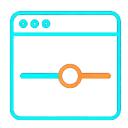
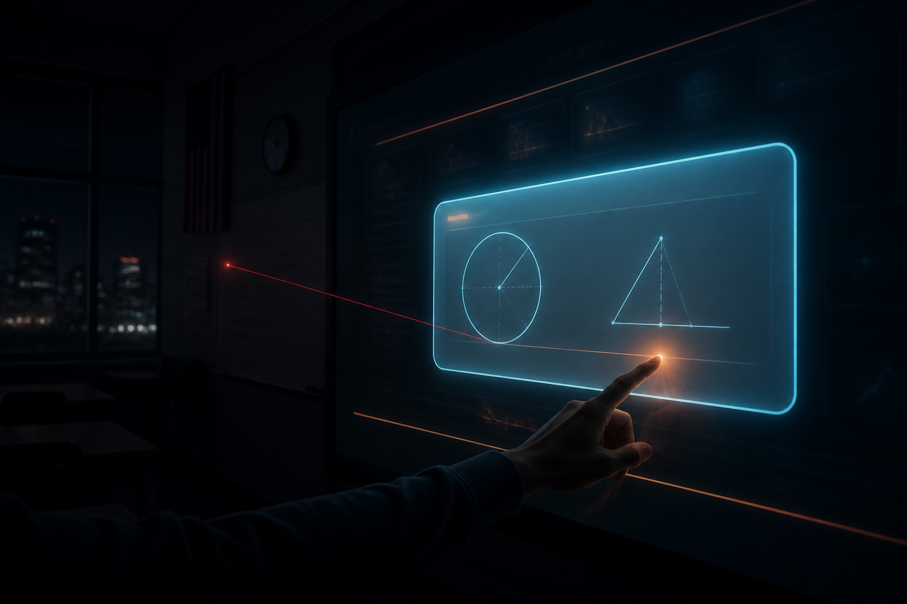
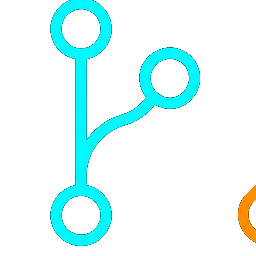

2026.08.26 ｜ 臺中 · 數學科研習
從教室的那塊大屏
到自己做出教材
數學科數位教學 × AI Agent
新進教師 ／ 代理教師 ／ 輔導團夥伴
三師爸 ｜ 2 小時 · 現場實作為主
今天走這條路
① 硬體你手上已經有什麼
▶
② 心法TPACK · PIDS · SAMR
▶

③ 教材網頁做出課本沒有的
▶
④ 遊戲玩的過程就是評量
▶
⑤ 會考非選出題與批改
今天不談「怎麼用某個軟體」。
談的是 —— 當市面上沒有你要的那個教材時，你可以自己做出來。
※ 後半段全部是現場 Demo，連結與 QR 都在投影片上，可以當場掃、當場玩。
先問一句：你的數學課，最常用的數位工具是什麼？
熱門答案
LIVE
連線中…
總提交：0
不同答案：0
PART 1
硬體，其實早就到位了
86 吋大屏、生生用平板、書商資源全免費
那為什麼課還是不太一樣？
觸控大屏：三種連線，差在哪
| 連線方式 | 特性 | 要注意 |
|---|
| HDMI ＋ 觸控線 |
最傳統、最穩定 |
觸控線是靈魂，沒接就只是一台大電視 |
| Type-C 一線通 |
影像、聲音、觸控、供電，一條線全包 |
要新款大屏才支援 |
| 無線投影 |
可開「允許反控設備端」達成反向觸控 |
有微延遲，但老師能走下講台 |
硬體環境領導教學 —— 只有當老師的雙手被解放，教學模式才會真的改變。
生生用平板：三種載具
iPad
台灣教育市場佔有率第一
Type-C 接大屏，或同網域下用螢幕鏡像輸出
Chromebook
佔有率第二，通常內建觸控筆與鍵盤
類似小筆電，Type-C 有線連接
Windows
如 Surface Go 系列
操作與一般電腦相近，視機型支援有線或無線
給新進與代理老師的一句話
到一間新學校，第一件事不是學新軟體 —— 是搞清楚
這間教室的大屏怎麼接、平板放在哪、誰管借用。
這三件事沒摸熟，再厲害的教材都放不上去。
教學軟體，其實只有五類
| 類別 | 代表 | 對數學科的意義 |
|---|
| 書商數位資源 | 康軒、南一、翰林 | 電子書、題庫、簡報、GGB 互動程式、AI 出題，全免費且極豐富 |
| 數位白板 | myViewBoard | 檔案管理強，畫筆好用，適合整合客製化教材 |
| 電子佈告 | Google Classroom、Padlet | 派發教材、收作業、整合資源 |
| IRS 即時反饋 | Quizizz（微廣）、Nearpod | 形成性評量、投票、抽籤，即時看見全班迷思 |
| AI 工具 | Gemini、NotebookLM、Claude | 目前多用在課前備課 |
不用每樣都學
每一類
挑一兩樣精通就能應付 80–90% 的教學場景。工具永遠學不完，博而不精才是浪費。
硬體到位、軟體成熟 —— 那卡住的是什麼？
現在多數教材：數位化
- 紙本掃描成 PDF
- 課本變電子書
- 只能翻頁、畫線、點選
- 本質上還是「投影出來的紙」
→
該去的地方：高互動化
- 拖拉：手把方程式移過等號
- 滑桿：拉一下看畢氏定理變化
- 點選：點錯順序會提示
- 掃 QR：全班作答即時進後台
問題不在硬體，在教材。
專為觸控大屏設計的數學教材，市面上少得可憐 —— 這正是今天下半場要處理的事。
先講一個框架：TPACK
最常犯的錯：只顧著 T
為了數位而數位、為了 AI 而 AI —— 課上得很炫，
但學生沒學到數學，也沒有適合的教法撐著。
三個圈的交集才是 TPACK。把 T 換成 AI，
就是 AIPACK —— 框架沒變，換的只是工具。
PIDS 三力，剛好一一對上 TPACK
T 技術
↔
數位力
P 教學法
↔
互動力
C 內容
↔
視覺力
數位力 ← T
工具要熟：大屏、平板、軟體
技術這一塊的實作面
互動力 ← P
怎麼讓全班動起來
這就是教學法在課堂的樣子
視覺力 ← C
把數學概念變得看得見
學科內容能不能被理解
三力的順序是有意義的
數位力是地基（工具要熟）→
互動力是骨架（課堂要動起來）→
視覺力是最難也最值錢的一層。今天後面三段的 Demo，全部落在
視覺力上。
數位力自評：做得到的就打勾
九個項目，點一下就勾。勾完按送出，我這邊會收到全場的分布。
工具運用
教材設計
數據反饋
先看看自己空著的是哪一格 —— 今天的內容就從那裡開始用。
SAMR：判斷一個新工具值不值得學
S
替代
Substitution
換工具、功能沒變 例：紙本課本 → 電子書
A
改良
Augmentation
有替代且增強 例：IRS 取代舉手，害羞的學生也願意作答
M
改造
Modification
科技改變了任務設計 例：自製畢氏定理滑桿網頁 —— 以前做不到
R
重新定義
Redefinition
創造前所未有的任務 例：學生手寫解題拍照 → AI 批改並診斷迷思
這把尺，今天請一路用到底
學新工具前，先跟你手上現有的比一次
如果花了大量時間學新工具，結果只做到
S（替代） 或
A（改良） —— 那是
非常浪費時間成本的。
導入新工具的目標，至少要到
M（改造） 或
R（重新定義）。
已經夠好的，別重造
- 書商題庫、GGB、出題高手
- Wordwall 現成模板
- 康軒的互動程式
才值得自己動手的
- 市面上根本沒有的動態教材
- 只有你這個班需要的分級設計
- 要留下學習歷程的任務
視覺力（一）：別讓學生的大腦打架
大腦處理「文字／語音」和「圖片」走的是兩個不同通道。
同一頁教材，兩種做法差在這裡：
投影片滿滿文字 ＋ 老師一直講
兩股文字資訊在同一個通道搶位置，學生兩邊都沒接住。
✓ 搭配
畢氏定理
一張圖 ＋ 三個關鍵字，細節用講的
視覺跟聽覺各走各的通道，資訊量加倍、負擔沒有加倍。
口訣：簡報字多就少講話，要多講話簡報就只放圖。
視覺力（二）：三種認知負荷
學生腦袋的負擔分三種，處理方式完全不同 —— 不是全部都要減少。
| 負荷類型 | 是什麼 | 數學科怎麼處理 |
|---|
| 內在負荷 |
內容本身的難度
如：因式分解就是難 |
由簡入深搭鷹架，不是刪內容 |
| 外在負荷 |
不必要的干擾雜訊
花俏裝飾、無關資訊 |
極力去除 —— 講這一題，畫面上就只留這一題 |
| 本質負荷 |
有助理解的外加資訊
圖表、範例、動畫 |
主動增加 —— 多畫一張圖永遠值得 |
最容易搞混的一點
很多人以為「認知負荷理論 = 東西要少」。不是 ——
該減的只有外在負荷（雜訊），本質負荷（好圖表、好範例）反而要主動加。
視覺力（三）：做減法長什麼樣
同一份考卷、同一台大屏，差別只在有沒有把雜訊拿掉。
整頁投出來，螢光筆愈畫愈多
學生的眼睛不知道要看哪 —— 全部都是雜訊。
放大／截圖，其他全部暗掉
視線只有一個去處，剩下的認知資源全給內容。
減掉的是雜訊，
不是內容。
視覺力（四）：明天就能用的白板四招
① 只留當下那一題
講考卷時用放大或截圖，把周圍的題目全部清掉。整頁投出來是最常見的錯。
② 用鐳射筆，不用螢光筆
畫完幾秒自動消失，牽引視線又不留雜訊。螢光筆畫多了自己變成干擾。
③ 用形狀框住運算順序
四則運算用紅框藍框把步驟框起來，用視覺確立優先級，比講三次有效。
④ 站到大屏前用手寫
學生的眼睛會追著老師的手走。同樣的內容，坐在電腦前用滑鼠操作，聚光效果差非常多。

畫面上只剩那一題、鐳射筆的光跡幾秒後自己消失、老師站在大屏前用手寫。
三件事都在做同一件事 —— 幫學生的眼睛決定要看哪裡。
課本那一大段文字，怎麼變成一頁
① 訊息區塊化
用 AI 抓關鍵字，把長段落拆成條列的重點與步驟
② 重點結構化
設標題層級、調邏輯順序，用對比色標出真正的重點
③ 內容視覺化
加圖表與扁平化圖示、箭頭引導，配合動畫逐步出現
做完長什麼樣 — 真實成品
現場直接點開翻幾頁，
比看說明快得多
但是 —— 絕不要直接用 AI 生的簡報
AI 生的簡報模板味重、雜訊多。
讓它幫你擬大綱可以，最後的視覺化一定要自己動手改。
今天你看到的這份簡報，也是這樣一頁一頁調出來的。
PART 2
那，滑桿教材
要去哪裡找？
答案是：找不到。
所以接下來講的，是自己做出來的方法。
先分清楚：生成式 AI 和 AI Agent
生成式 AI（ChatGPT 類）
- 你問我答，一次性回應
- 對話框關掉，記憶就消失
- 只能回你文字
- 要你自己複製貼上去用
VS
AI Agent（有手腳的）
- 在你的電腦上持續工作
- 有專案資料夾、長期記憶
- 讀寫檔案、上網、部署網頁
- 直接把成品存到你的資料夾
「AI Agent 叫做 AI 代理 —— 你能做的事情它都能做，
你不能做的事情它也能做。」
Agent 的四大能力
讀寫檔案
給路徑就能讀
課本 PDF、成績表、學習單
執行程式
內建 Python
缺套件自動裝，你不用碰程式
產出成品
Word／Excel／PPT／PDF
還有 —— 網頁
一句話的實例
「上網下載會考歷屆試題 → 每題截圖放進 PowerPoint 每一頁 → 下一頁寫解答（含方程式與圖）→ 存到我的資料夾」
—— 這四件事，是
一句話一次完成的。
接下來，三個現場 Demo
① 教材網頁
課本沒有的滑桿、拖拉
自己做出來，掛成一個網址
學生掃 QR 就能用
② 課堂遊戲
不是答對才給玩
而是玩的動作本身就是數學
三款、三種課堂結構
③ 會考非選
出題與批改的完整閉環
學生手寫上傳 → AI 初評 → 老師定分
最硬的一塊
三個 Demo 的共同點：全部是 SAMR 的 M 或 R ——
沒有一個是「本來就買得到、只是換成數位版」。
從一個念頭，到一個學生能掃的網址
① 你說一句「做一個畢氏定理的滑桿網頁」
▶
② Agent 寫單一 HTML 檔，當場可預覽
▶

③ 推上 GitHub版本留著，改壞可以回去
▶
④ 變成網址GitHub Pages 免費，學生掃 QR 就進得去
| 你可能會問 | 答案 |
|---|
| 要錢嗎？ | GitHub Pages 免費，公開 repo 無限用 |
| 我不會寫程式 | 你不用寫。你要會的是描述教學需求 —— 那是老師的本行 |
| 學生怎麼進去？ | 一個網址 ＋ 一個 QR Code。不用帳號、不用安裝 |
| 改一次要多久？ | 「把滑桿範圍改成 1 到 20」 —— 一句話，幾十秒 |
DEMO 1 國中數學全六冊，互動複習簡報
364 頁、約 169 頁互動，涵蓋國中三年全部課程，依 108 課綱逐條查核、超綱為零。
同一套引擎、六個網址 —— 點網址現場開，QR 給老師掃回去。
這些頁面，實際上怎麼長出來的
# 你對 Agent 說的話，大概長這樣 —— 就是自然語言
「我教八年級數學，這是課本畢氏定理那頁的截圖。
幫我做一個互動網頁：可以用滑桿拖動兩股的長度，
旁邊即時顯示兩個小正方形和大正方形的面積。
輸出成單一 HTML 檔，我要掛到網路上給學生掃。」
三個關鍵字，講出來差很多
①
給截圖（讓它看到課本真正的樣子）
②
說清楚互動方式（滑桿？拖拉？點選？）
③
指定單一 HTML 檔（才能直接掛上去）
最難的不是技術，是你知道學生卡在哪一步 ——
而那是老師才知道的事。
PART 3
遊戲不是獎勵
遊戲就是評量
「答對十題就給你玩五分鐘」——
那是把數學和遊戲切成兩半。
設計原理：機制即評量
- 答完題 → 才給遊戲獎勵
- 數學是門票，遊戲是糖果
- 學生記得的是遊戲，不是數學
- 拿掉數學，遊戲照樣好玩
VS
- 遊戲的「操作動詞」＝ 數學行為本身
- 報座標才能攻擊、解不等式才能出招
- 玩得好 = 數學做得對
- 拿掉數學，遊戲直接不存在
老師在後台看到的不是「誰玩贏了」，而是
誰在哪一步卡住、犯的是哪一種錯。
DEMO 2-1 座標軍艦棋
11×11 整數格點，x、y ∈ [−5, 5]，原點在正中央。放 3 艘船（5／4／3 格），1 vs 1 對戰。
兩種攻擊方式：
·
座標攻擊 — 報 (x, y)，命中 +10
·
方程式掃射 — 寫 ax+by=c 或 y=mx+k，
每命中一格 +8，每局限 3 次
（禁水平／垂直線，逼學生真的用斜直線）
· 格式錯誤 −2，防亂猜
| 對應學習表現 | 留下什麼資料 |
|---|
n-IV-4 直角坐標
a-IV-5 二元一次方程式圖形
f-IV-1 以方程式描述幾何 |
每一步的 CSV（時間／方式／輸入／命中／得分）＋ 學習單 HTML（船艦配置、方程式一覽、4 題反思）
實戰：715 班 26 場對戰 |
DEMO 2-2 不等式格鬥場
紅藍兩隊格鬥，1v1／2v2／3v3，隊伍血量 = 360 × 人數。
怎麼出招 = 怎麼解不等式：
· 拖曳移項（token 拉到左邊或右邊）
· 選擇合併後的結果
· 兩邊同除 ——
含變號判斷
解對 → 傷害 = 24 − ⌊秒數/8⌋（下限 12），
含變號題再 +6
解錯 →
自己扣 12 血
誘答選項直接打在誤解上
「同除 −4 不變號」、「不等號改成 >」—— 這兩個選項不是隨便湊的，
是
國中生真的會犯的錯。選了就知道他卡在哪。結算頁有逐人傷害與失誤統計。
DEMO 2-3 中位數偵探
全班共玩一場，老師主持、限時自動推進。
全班各輸入 1 個數（1–50）→ 系統剔除 1–2 個極端值 → 三輪猜「剔除後的中位數」。
關鍵在三輪的表徵不一樣：
| 輪次 | 看到的畫面 | 學生能做什麼 | 答對得分 |
|---|
| 第一輪 | 文字雲（亂序散佈） | 只能估計，看不出順序 | 10 |
| 第二輪 | 亂序數字矩陣 | 可以數，但難找中間那個 | 7 |
| 第三輪 | 排序後的矩陣 | 結構化了，可精確定位 | 4 |
表徵逐步結構化 = 概念發展的鷹架。
資訊越完整、分數越低 —— 逼學生早一點想通「為什麼要排序」。
三款遊戲，三種課堂結構
|
軍艦棋 |
不等式格鬥場 |
中位數偵探 |
| 數學動詞 |
報座標、寫方程式 |
程序化解題步驟 |
估計 → 計算中位數 |
| 人數結構 |
1 vs 1 |
1v1 ~ 3v3 團隊 |
全班 vs 謎底 |
| 課堂定位 |
總結活動（單元後） |
程序熟練 ＋ 誤解診斷 |
發展活動 ＋ 形成性評量 |
| 答錯的代價 |
−2 分（防亂猜） |
自己扣 12 血 |
該輪不得分 |
| 診斷什麼 |
直線過格點的判斷 |
負數除法變號 |
中位數 ≠ 平均、奇偶取法 |
選遊戲不是看好不好玩，是看你這節課要放在哪個位置：引起動機、發展練習，還是單元收尾。
一個檢驗：拿掉數學，還玩得下去嗎？
還玩得下去
- 數學只是遊戲的「門票」
- 換成成語、單字也照樣跑
- 學生的注意力在操作上
- 再好玩也只是包裝
直接不存在
- 軍艦棋拿掉「報座標」→ 遊戲沒了
- 格鬥場拿掉「解不等式」→ 沒招可出
- 偵探拿掉「找中位數」→ 沒謎底
- 這才是內建式設計
設計自己的遊戲時，先問這一句。
答案是「還玩得下去」，就回去重想機制。
PART 4
最硬的一塊：
會考非選題
出題很難、批改很累、標準很模糊。
這三件事，一件一件拆。
先看清楚：非選題其實有公式
分析 103–115 年官方試題後，結構穩定到令人意外：
非選題 = 生活情境 ＋ 題目自己在題幹裡定義一個新規則
＋ (1) 單步套用定義 ← 保底，決定有沒有 1 級分
＋ (2) 建模 → 推理 → 下判斷 ← 鑑別，決定 2 還是 3 級分
第 (2) 小題的問法只有八種：足夠型／一定型（舉反例）／可能型（證不存在）／能否型／比較型／最值型／證明型／列式求值型。
DEMO 3-1 把命題規則變成可重複執行的模板
不是「叫 AI 每次現寫一題」
那樣
數學會錯、風格會飄。要做的是把命題規則拆成骨架 ——
模板卡固定數學結構、問法、干擾項設計、評分錨點，
每次生成只換情境與數字。
模板卡（31 張）
↓ 抽情境與參數 → 檢查約束 → sympy 精確算答案
生成器
↓
三個產物：題目圖 PNG 題庫 JSON 非選評分規準
↓
既有的題庫站、作答站、AI 批改 —— 一行都不用改
同一張卡出一百次，數學都對，但學生看到的是一百題不同的題目。
DEMO 3-2 從學生手寫，到成績出爐
學生 iPad 手寫／拍照上傳 （站內 canvas，或相機＋文件掃描校正）
↓ 交卷
收卷 → 圖存雲端 → 寫進試算表
↓
AI 視覺模型依評分規準初評 （逐條判準 ＋ 級分 ＋ 理由 ＋ 信心 ＋ 辨識內容）
↓
老師在覆核頁定分 （可一鍵套用 AI 級分，或逐份改；有鍵盤快捷鍵）
↓
自動產紅筆批改圖 （程式化疊加，原圖逐位元不動）
↓
學生自己查：級分、評語、紅筆圖、參考答案
※ 老師端的題庫／出卷／非選覆核站在 math809-bank.pages.dev ——
含全部詳解，別投影到學生看得到的畫面。
為什麼 AI 需要「評分規準」才批得準
官方的給分標準其實是三層，AI 只拿到第一層是不夠的：
| 層次 | 內容 | 誰產出 |
|---|
| 通用規準 | 四句話，每年每題都一樣 | 心測中心 |
| 逐題評分指引 | 把那四句話翻譯成「這一題怎麼判」 | 命題委員 |
| 樣卷 | 真實學生答案 ＋ 評分理由，決定所有邊界案例 | 閱卷後歸納 |
四個錨點撐住一份規準
- A：第 (1) 小題的答案 → L1 起跳
- B：第 (2) 小題的關鍵關係式
- C：關鍵轉化步驟 → L2/L3 分水嶺
- D：最終判斷句 → L3 必要條件
最容易被忽略的一條
- 「只有答案而無過程」
- ＝ 零級分
- 不是 1 分，是 0 分
- 學生一定要知道這件事
誠實講：AI 到得了哪裡，哪裡一定要人
AI 做得不錯的
- 辨識手寫算式（多模態模型已經很強）
- 逐條對照判準給初評級分
- 多次投票取共識、平手取低
- 標記低信心與邊界案例
- 把 30 份先排好序，老師從最可疑的看起
→
一定要老師的
- 最後定分（官方是人工雙評，分歧超過一級交第三位）
- 邊界案例的判斷
- 這個孩子的答法算不算「策略適切」
- 要不要跟他當面談一次
AI 省掉的是「翻 30 份、找出哪幾份要細看」的時間，
不是「決定這個孩子幾分」的責任。
回去以後，你打算做哪些？
可以複選，再點一次可以取消。選你這學期真的做得完的。
已作答：0 人
·
你選了 0 項
連線中…
AI 素養：你要守的，和你要教的
前兩件是老師自己的界線，後兩件是要交到學生手上的能力。
AI 產出的只是初版
教材、題目、簡報 —— AI 給的全部是草稿。
一定要再修一輪才進教室，不能原封不動拿去用。
老師是最後一關
尤其測驗題與評分。
專業審查不能外包 —— 給幾分、算不算對，責任在你不在模型。
教學生「不要照單全收」
AI 會錯、會編。學生要學會查證與質疑，
學習單裡就要留「你哪裡不同意它」的欄位。
留下思考的痕跡
重點不是答案對不對，是怎麼問、怎麼改。
對話歷程要留，那才是評量的依據。
| 學生現在的狀態 | AI 扮演什麼 | 你要做的事 |
|---|
| 沒有基本能力 |
大腦外包 |
先擋住 —— 教規範、給提問框架、配紙本學習單 |
| 正在建立能力 |
共學鷹架 |
讓 AI 引導但不給答案，逼他自己走完那一步 |
| 已經有能力 |
能力放大器 |
放手讓他做更難的事 —— 這時 AI 才真的有價值 |
基本能力越強，AI 才是越強大的放大器；沒有基本能力，AI 只是大腦的代工。
這句話對學生成立，對我們自己也一樣。
明天回到學校，各自的第一步
今天在場的三種夥伴，起點不同，第一步也不該一樣。
新進的夥伴
先把教室摸熟
大屏怎麼接、平板誰管、書商帳號在哪
白板四招今天就能用
不用等到會做網頁才開始
已經有經驗的夥伴
挑一個你最頭痛的單元
那個每年都要重講三次的觀念
做一頁動態教材補上去
你最知道學生卡在哪
輔導團夥伴
把 SAMR 當共同語言
入班輔導時一起判斷值不值得做
遊戲與命題模板整團共用
一個人做，全團受益
共同的第一步
挑一個你這學期一定會教到的單元，只做一頁 —— 一個滑桿、一個拖拉、或一組分級提示。
做完把網址掛上去，下次上到那個單元直接用。
一頁就好，不要一次想做一整冊。
工具會一直換
但「知道學生卡在哪」不會
老師是教室裡的船長。
AI 只是讓你終於有時間，去做那些只有你做得到的事。
2026.08.26 ｜ 臺中 · 數學科研習 ｜ 三師爸